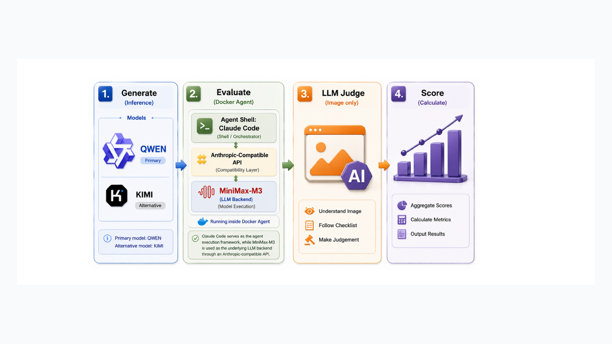

WebPilot: Browser-Grounded Multimodal Web Coding Agent
Developed during SMILES 2026, WebPilot studies a browser-grounded agent loop that uses screenshots, DOM states, build and console logs, and interaction feedback to iteratively generate, test and repair web applications. The project compares single-pass generation with structured and autonomous browser-feedback pipelines, with evaluation across executability, interaction correctness, visual quality and repair behavior.
Research outcome: co-authored manuscript submitted through OpenReview as an SSPP 2026 submission. This item is presented as a manuscript submission, not as a published paper.